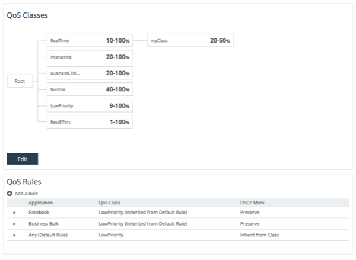
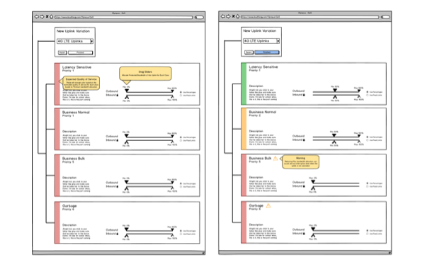

The Project
The QoS feature of the SteelHead was being re-implemented and so it was due for a redesign. QoS is extremely complex and the design process was long. But it was an incredible success. Through the extensive UX research and design, we proposed a mental model for QoS in the SteelHead. The engineering team involved like it so much, they changed the underlying implementation to match the user's mental model. Also, a new paradigm of mass configuration was introduced to SteelCentral Controller for this feature.
Feature Research

QoS is an enormously complex feature. The first step in our process was to fully understand how QoS works, what its intended to do, and what is needed to make it do that. We learned everything from the HFSC algorithm, QoS classes, deep packet inspection, latency priority, minimum and maximum bandwidth, etc. It got to the point where the questions we asked of the engineers couldn't be answered without looking into their source code.
User Research
After learning everything there is to know about how QoS works, it was time to speak with customers to see how they actually use it. We went onsite at several companies in Illinois, Montreal, and the UK. We also conducted remote interviews of many more firms. We learned what they used QoS for, what issues they had with the current version of QoS, and what they wanted to do with the QoS feature in the future.
Sites

QoS needs to know the speeds of every network connection in the system. It needs to know this so it can adequately divide up resources. Our customers generally have hundreds or even thousands of locations and each could have multiple network connections. So we created an entire concept around this called Sites. Each site has any number of uplinks and each uplink has upstream and downstream bandwidths associated with them.
Classes
{kind=link}
QoS has classes. Classes are sort of like buckets. Each bucket gets a set of Apps that flow into it, then the QoS system decides how many resources on the network each bucket gets. The most important thing to remember about these buckets, is that giving one more resources, necessarily gives the others less. Also, putting all traffic into an important bucket may not be desirable. QoS works by prioritizing important traffic over less important traffic. If all traffic is marked as important, it can't do that. Concerns like this were common from customers. We attempted to produce UI's that could show some of this informtion in a visual way, but in the end, we went with a fairly simple tree visualization. A few slides after this, there are some concepts we made for visually showing class information.
Rules

QoS classes are like buckets you put Apps into that then get managed by the QoS system. Rules are the mechanism by which the user puts apps into the classes. Because SteelHead has incredibly powerful Deep Packet Inspection (DPI) technology. Specifying apps is incredible easy. Users can search for commonly known names. Also, we have pre-grouped apps into about 8 groups that the user can also specify. This makes determining which traffic goes in which class incredibly easy.
Profiles

QoS profiles are how you connect QoS Classes and Rules and Sites. The SteelCentral Controller has a birds-eye view of all the SteelHeads on a user's network. We designed the profiles UI to take advantage of this extra knowledge. We did this by having the user choose a source and destination site or group of sites that a profile applies to. That way the user has an extremely visual way of configuing QoS. They have an extremely intent based configuration. Instead of specifying thousands of rules that get spread about their network. The user specifies their intent. An intent being "I want all Business Critical Applications to have priority for all Branch sites when connected to all Data Center sites." This is an incredibly powerful paradigm that doesn't exist in networking products.
Experimentation
As with all features, not every thought and idea created by the design team makes it into the product. Below are some of the experiments that didn't end up shipping.
QoS Class Feedback

One of the main problems with configuring QoS Classes is that its hard to know if the amount of bandwidth you're allocating is enough for the applications placed into the class. We attempted to create some configurations that would advise the user of issues with the classes and tried to summarize their congestion over time in a visual way.
Uplink Variations
{kind=link}
One of the features that we wanted to offer, but didn't make it in is per-path QoS. Uplink Variations are a system where the user could select different QoS Class min and max assignments based on the Uplink that was being used. That way, if the site was running on a backup link that wasn't as fast, the user could rein in non-critical apps far more. This would prevent an interruption in needed services while on this backup network connection.
Uplink Variations
{kind=link}
SteelCentral Controller has really great dashboards that give an overview of what is going on on your network. We wanted to make a QoS widget for the dashboards. This is one mockups of what a QoS widget could have looked at. It has the classes specified by the user and relevant events for each class when expanded.